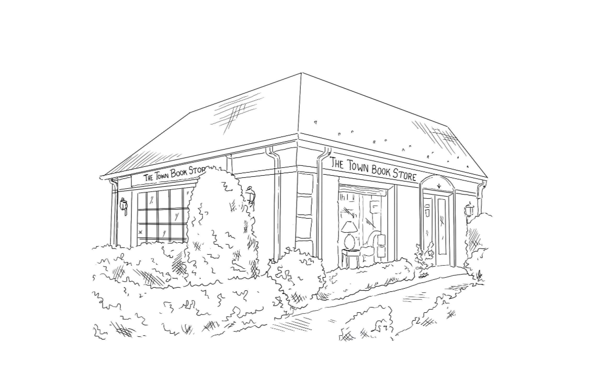

About Us
Welcome to the longest running bookstore in Union County! According to the original business ledgers on display in the shop, The Town Book Store first opened its doors on September 4, 1934. After operating from the same address for 72 years, TBS relocated across the street in 2007 to 270 East Broad Street, the site of Westfield’s first library. In today’s rapidly changing retail environment, TBS remains a welcoming space where readers can find a first-rate literary selection and take a moment to slow down and browse. Whatever you’re looking for in your next book, our friendly and knowledgeable booksellers will steer you in the right direction.
Though modest in size, TBS's inventory is carefully curated and caters to the many interests of our customers. Individualized services like fast turnaround on special orders, author signings, out-of-print book searches, book club discounts and free gift wrapping are just part of the shop’s appeal. Our children’s section is full of popular favorites as well as unique and educational titles you won’t find anywhere else.
Come by and say hello. We look forward to meeting you and bookending our community for many years to come.
Lisa Schwartz, Owner #8